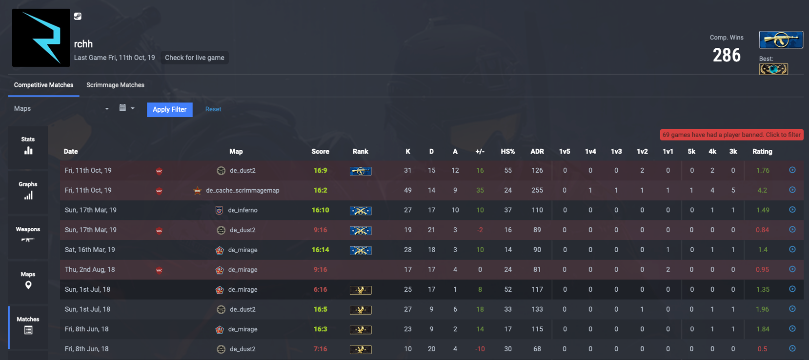
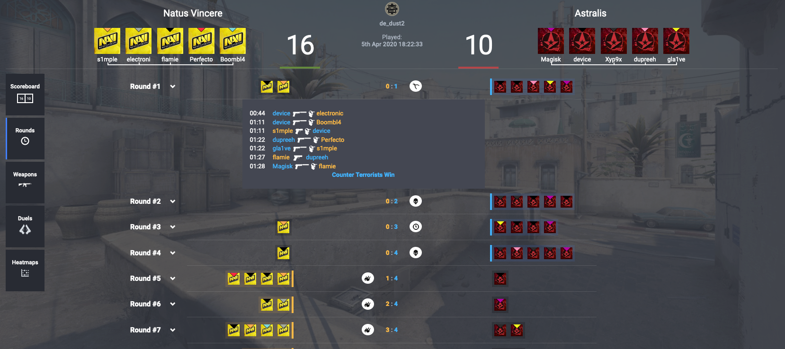

Cs:go Estadisticas
Perfiles de estadísticas competitivas
¡El único perfil de estadísticas de CS:GO basado en los juegos oficiales de Valve Matchmaking! ¡Nuestras estadísticas no incluyen datos de combate a muerte ni mapas de entrenamiento! Todo lo que tiene que hacer es agregar su código de autenticación del juego y comenzaremos a ayudarlo a realizar un seguimiento de su progreso y mucho más.
Estadisticas avanzadas posteriores al partido
Una vez que se haya procesado tu partida, puedes consultar todas nuestras estadísticas avanzadas de CS:GO en el marcador. Tenemos todas las estadísticas básicas, ¡pero puedes ver quién estaba recibiendo esos fragmentos de entrada, quién estaba intercambiando más que solo máscaras y quién era el rey del embrague!


![...](data:image/jpeg;base64,/9j/4AAQSkZJRgABAQAAAQABAAD/2wCEAAoHCBUVFRgSFRYYGBgYGBgYGBgYGBgYGBgYGBgZGRgYGBgcIS4lHB4rIRgYJjgmKy8xNTU1GiQ7QDs0Py40NTEB
DAwMEA8QHhISGjQrJCE0NTQ0MTQ0NTQ0NjQ0MTQ1MTQ0NDQ0MTQ0NzE2NDU0MTQ0NDE0NDQ0NDYxND80MTQ0NP/AABEIAKoBKQMBIgACEQEDEQH/xAAbAAABBQEBAAAAAAAAAAAAAAADAAECBAUGB//EADkQAAICAQMCAwcCBQIGAwAAAAECABEDBBIhMUEFUWEGEyI
ycYGRobFCweHw8VLRFBUWI4KiB3KS/8QAGQEBAQEBAQEAAAAAAAAAAAAAAAECAwQF/8QAKREBAQACAQMDAwMFAAAAAAAAAAECEQMhMUESE1EEFIFhcfAFMqGxwf/aAAwDAQACEQMRAD8
A8xikqk0S+06sIASSiE90ZJcUAYEIoklwmFXFAGohAsmuIwqY4EUSWExwuLFLmLB6QK+PDLSYJdw6X0l3FpPSQUE00sJppoppJZTTSNM1NNLKaeX108OuCBnjBHOMAbj9vWaKYPx3mZ4lm7eU3jjuueWWowPE35MwNQJrax+sycxnazUcJerOyiVnEuZZVcTjY7wBhIwjQJmGm14H4o2Fx3Q/
Mvp5j1ndhQwDLyCAQfMHpPMMRnfeyeffjOMmynNV0Vugv6/v+Nd4m9VYzYJnajTzoMuKUtRimVc5mxSnkSbuowzOzYpRkukE6zQyYT5Ss+IwKZEgwllsZkDjMCuRGMOcZkChgCMUlFUA2NbMsKILB1h1lCkg
IJyQesSsfOBYRYVVgEJ84fHcCxiSWRhuCwqZoYMZgNp8E1NPpu8WmwTV0+HpIB4NPLuLTw2LDLWLDf8AOQVlwwq45Yd1WBbXgd5qY2pc5ElxyYxzMz+MqO8bH4yvFc/Wa9FZ9yNLUfCk5XXvyZ0Ws1IZAR0InLa97nTjxcuTJkaxpk52mjqrqYuRqPMudMIHmNd5UZ5LM3JldmnDKu8h2aQjbpOZU2+p1/
sO7nLtX5dpL+v+P3LTi93N9h+vpPVvYDwspp2yMPicgetdTNTymXhrZElTNjmnlSVMiTLbHz4Zn5MM3cmOUsuOVlg5scpZEm1qcXBmVmSBTdYJhCZEld1gIyJEgwk0HEAWVe8FLGUcQFwLWAQwEBiHWHUSiOReftEqxOOYREgTRJbwpB40l7BjgH02KaumwSvpcc2NNjigunwTSwYpDBjl3EkyHChRZ6CZmo8
WpqB4omv0uX9fjdlISqX5rNXYJ6+gH/tPPtXqGVnLHncV+gUkTtx4zW65cmV3qNXX+O10M5/V+OsTwZlavUkmpRcxlnrsY4b7tF/EmJ5MPpvE2HFzDLyeJ+ZiZ3bVwmno/hmtbJiA7rwfQdpTzXkYqh4U/E38K+Yvu3p27zndNr3CtiQ173aCf9IUm68ibAneez2DHnwhVHu/dpTp3DKpPAPW6J/M745Rxyxrmt
ThUcHkd+f7/MxNfpxyQfp/X1naDwwOShba3a+58pzfjujOFqYde3n6g/eXOTSYWuWzg9P5ysWljVCjx0/aVch855MnqxOGiZoIyQMjQum2ghm6DmvM9pfz+P6lhtXK6qCCqq20Ajpddfp0mUqkwy45ZbrSam9vT09u9K20MMi2tlig2hqsjhr8+06XJhniGjybMiZCquFYMUYnawB6GuxnqWH260jhd29C17rUsE
8rYfNfHQHrCbaWRJSzJxCL4/pHIC5ls+YZfySOIfKnFjm/uDKu2DqcfBmTnxzo9TjmRqccIxMqSo6zTzY5SypAouJJBxJOkSjiAPKOICofKOIDiBZwDrDoIDEaMtKJpEXTmGxofIyaCWUWAsWM+U0NPjPlB4Vmlp1hR9Nj9Jr6ZJW0yTSwCZFrAktosDhWGGoQOuMsA7Biq9yF+Yj6XAbxAIuFmdtqgly3YBAtg+
hUEfUieQ6zPvU5UNhiS3coTyQfL/E9Q8ZRdXibT4cqFkdXdUdWsq9+6yAHhTsawfIes8ezY9rtj3AqrPRUcEmv9h+J0xuo55SWg5OvEA4m/oPA8uZFyIUCsxS2aqZRZ3kAhBXdiBzMvJgZV30dgYpvHKbxzt3Di659R0mbGpVRUhhikQwlhGx/DZccHdQU/FfG2yOKrr09ZJItptEfiAP6z2P2RxIAdqDlQ1kDdz2/
l5TzBPDEGoOBcp3BRsJQEM+0McZ+KgfI9yKnaeAe0Bel2orYgqMVa96cBW2EdD0NEkGpuf26YvfbqPH9CGSgABusEcEE8Hp0+neeYePIzMSWLUKskk0PrPRPaDxesBZVLpY3unxbEABLMByKNXdULM4rxXB1PX18x6TrhN46rlnZMtxwepQg3KbCbOvSiZjZiAfXtPNnNV6cbuABjColyCrDrMNHUSe6DZ426XaaTYwZ
YiLdBsY2iymQ9mH0rmbngnj+TGyqxfZfKg2pHlR+X7TmTNTwTNiVrys6lQChUKVD3xvtW+H/AMTLKWPSsOsx5l3IwPmO4+olLUY+synGFWR1ZUbLZV0K7GINFWCkqG6cX073wNjG+4tjet6UGrobFg8/g+RE3Z5Zl8MnOkz8yTe1GP0mdmxjymWmM4jKOJcdB5Su6SiplHEBLGY9oCAUQyORBCEWVFlMp8pcxZDKCCXcI
gaOnf0mrpjM3SpNnSpIq9phNHGQAWYgACySaAA5JJPQSrp0lXXeI4irLvQopdM5ZgEQ8IEfq1szgChXVr+Ci1st01cmuO44cIR8y0WRn2UpBN8Akk8Ua283fFHzfxXxXUJrHd2t8b/CocuiDqcamhxRKngdDMzxPVvgzumJ3xlQqcOd6D5mxFxW4IxK+uz6TMD2ebJ5P368y7k7M9b3IvRJFi7HU8g9ie8Xv4Fz1P
rI7pjbWlwa5whx7vgZgxWgQWXoenB+khi1zpexyA1bhfwtRsblPBrtYlQmMTG6uoKckQyQVxoRcTUtQG9qBsDcaBHQgXwYca57B3vYBAO5iQD1AN9D5TPUyQMS0sjrcXiLvjGVHZMicMVNG+/pTDmul2Js6PWpmxBRS5AptANoIHUot8cdqA61xwOF8N13u3sn4W+Fx6dj9jzNrUaVldMqNtVQrljQAPkOeb/Ym+LM745
eXHLHwqeNkJye/AHcmcyzWbM2PaJchffkKqW+XGD8Sp1BK9lN8E0W61RBml7LexmTWKcvvFTGrFTzucsACFC1Q6jknvOOd9WXR2xmsermlEIxoRmBHXr3HkfKCczLSLNGuTXH0vgNdHqTRrp9+8kVVd1c0asi/wADzu5AC6kt0WRrC+gr8SFwJlr9JEEgX2kDEGjYvaTWlLAqm4ZSNytXS1Pcdj1HYidJ4D4gFKLt+IkKGJ5
r+Ifqv/5nHg2Rf04l3S5ipDKeVoj6A3NY5Jli9HzmZ2YnyljT6pciLkX+Ifg9x+ZX1BmkUcz/AElPM8s5jKjwKzCQqFYRoCAhFMgJNZpBsc0dMJm76BbyBP4EH4Z4uiowyly1goRtK1zuBBIINntY46DvB2GjSbGnSpw6+1qJwmMt/wDZgv6UYx9s9QflXGg9FZiPuzUfxIN/2k8Yy48iYsbhAyb
mbaGYfEQet0KAPSco3i2VcrZUdg7cEk3YFbd3Zq2qR5FQR0kNfrXyAZMjbnbgGlFJY2/KB15P2EoZOB9v24lt0ncNRdkk/U8kk9yYwamH1H78yJI2/c/tB5DMbb0d25Igt0IzDc188NX15r9YGSkTDRFpG5FjGzQlx7gt0e42aE3yQeBuOI2aEZ7mgPHMi4kwqF+A2HI3MObG0HgV0ur8qmYZEmNmhEtiWYkkkkkm
ySeSST1M9W/+OMJTSMx435WZfUKqJ+6t+J5Ojz0vwrxTZ4ZvJrYuRFI/12QgHrbLEK4vxfTh8+f3ILoru1qDQUkk/YcgedcSudMq2vJflWFcAvjZlK+ZFVcWk1ZXC6jsw2mzwXRkY13+EStqdVu6Cj8O42fiKqVH04J/MqojKFCg8lSxoV3Hn9YA5CPl46ev6mNtiqQQik9sYyCEao5MaRSEsYzzY6j++ZXqSQyjp/Z/Xhbxn
jc3A54J/l/Sa2d5x2nzUQw6gg/cG50g1Qddw+/p6TcrNNkaVmMk7wDNKhMZG4iYrhEwIXGlkC+pA/rBCTBmkVXyZGtAnBFc3YHqekA+N0+YoA3B4Vq69qsHntNSgQR5ivzMjJvwsVRiOPmHB8+PL7TNWCjI1bUIZSQTWMEgqeCpo8wdMxJYktfPFdOTY+kk2uYrtCrz8zt/3HJ7kM/y/wDjR9ZDSqFs962j79f0/eTuvYZns35
UP06SGQ9Yx/NmBdr58uv0ktJES9ivWSQ8g/f6+kBCLJtdIs/FbR9e8GTHMUio3HiMa5A4EYiSilEaj3HqMVgOTGMbbFtkEkXmaujxPqHXTqze7B3EXwooB3rzNCvUgd5lJNfwXV+73fFtLED4b3UBfJH8P8/01KlZ2pTazKDe1mW/MAkX+krmGfkkwRELDAyVRlElUgiYzSRgzAgYo5EapFKSWRjwC4zzNDFkKgHtf+R+0zV
MtK/FfeajNaK5gYg0oKZZR5qIPcVwdx7lBpIGQuPKgqmZ3iN77J4I49B3/eXgZW17DaOATfHp5/tJexFBDXbnpC7gBt79z694NGJ5rgDsOL7c+cASbmNtaWS/SRvmM4oVz5n/ABGTmNmkHWoRekiVk8fSpFQdeYOoZx0+n7SFSVQyJGEKxqkERHEcLJqsoiJNRHqPcIgwkTCmavgPgT6pyikLS7iWugLroOTyZnPLHGW5XUjWON
yup3YyiW9NjFM5I+EUB3Jb4R9qJP29RZPENA+J2xvW5CVNGxx5HygC9Jt8zZ+wofufzLjlLNxMpZ0CkSseTmkBqPUlUiYEDI1JGKpFQqNUkRFUCNRVJVHqVDCEQyAEks0lHUw+MyshhlMsQcGSuDUycoLckDB3HuBMGV9YhYDyHX+UKWgsz8GSjPZzfPA8u1fSOvXnpFUREw0TRhHjwJqt2ewq4iKNf1jAmKArjTZ8N9n3y4zm
34kQPs3ZX2gtQahwexhsfs07M4XLpyqKrM4y3jAY7QCwFg2OlTnebCb3ezc48r4YFRVOj/6VynZsfE4diisjllDhS+1jtFGlMzdF4U+Tftoe7xvkbcSPhWrC0Dbc9P1icuF7XsXjyneM6o9Ta8T9nc2DaWUFXraym1JPO0mhR9DLeL2SyMzIcmBWW7U5DuoAMTQU8UZm8/Hre5pfay3rTmop0aey7EMwzafahUM3vG223QBtnWN
g9mXYvtzacqiqzP7xtg3kgDdt68fqJPuMPnse1l8OfQcz2b2e8P8AcYEx7VDAW5HdibJv8fieYeIeCvgCOWR1fcFfG29bWtwuhzzPW9O4ARCw3bBQ4BO0CyB17ifM/qfJ6scZjelv+nt+iw9Ny9U6zX+XN+1PiWHFiY4zi94W2quxGdWDEuWVhx9x1Pe55xrNa2Qln2kmuQiL04HyqKHpNjX+E58usfEdvvGdiedqcgvu70tc94
PN7P7RYz6ZuQKXMCeSBfIAoXZ56T1fS48fFjJvdvXf7uHPc88rdak6MGop0ef2YZEGQ5tPtYErWRjv28EJ8PxG+IR/Y/JuOMZNOXH8AyHeaG6gpUc1zPT9xx/P8ndy9rP4cvEZuab2cyv7raU/7wcpbMK2fNu+HjpxVxv+nsgRMjFEGRgqK5Id7IG5VAPw89TX7Xr3uPetp7eXfTCKyNTotd7NNi3Bs+n3J1UZSWvyC7LuYeRKJF
g0SLHQ13HpLjljnNypljce4BEapMiNU0yaoo9RVNQNHEUQlRNYZDACEQxEqwpk7glMnNILca5DdGJkEy0E78GJngnaS1dBkRRRCZUqjgRR4UqjiPUeTY6HwvxXANMdNnXLXvfeBsez/QEo7obTeKaVPe4guf3eVVBJOMuGVy3A+WvvOY2xbZwvBjd/r1dZy2a/R2Gm9o9Ph92uJcrKmU5GL7AxtClLtNd758oBfFdLjXL7oZy+TG+
Mb/dhQHr4jtN8VOW2x9sn2+G9r71dZk9rVOYttLYXRFfG9clABuWiabjg/wBgI9oU/wCLyana+x1cBfh3WyBBfNdR5zmtkfbJPpuOdp41+C8uV8+dum9nvaDHgxujnIrMysGxhGIAFEfHx+kfP7QY6z7fes2Vce1nGOwyMSdwXgLVAAAzmCkW2Pt+O5XLzT3stSfDsF1aa99NiAKEEh0VVVO7O6VzZC9D9u91faXxtm1ZfG1e5OxC
vbb8x54Nm/QiZHg3iP8Awz+8CBztZQCSK3CrBHer/Mpf7TGP08mfbpJ0/Pdq8tuP629fw7b2m1gTW48gL8Y1+LHt3ncXogMKJII4PUSHiHj6PifEBqHdlpRkTEApBsv8AuxMHxDx58xR2TGrpt2uisGIX5VILEEA+kAPF8lhvhsdDtXgWGr8qp+0xj9P0x3Os/41ebrdXpVvVa4th0+MI4OLezErwwdwVK+na/Oa2L2nX3+bIEbYw+
FgiHLibYE3AngDg8E/znPf85y0FsUEVPlX5V+UXX3+wgF17guRtG/5qUVdMLHlw7fmdPYll3j/ADbE5bLuV0ug8ZXGdNePKfce+DUvJ3gldoJ7Agm4PP4ymcLkzY3GbGVIdFBVkUhgHUkbevUef2mH/wA4y2SWuy5NgUS/DfsIm8aykbdwrbt+UdP74+w8pn7frvXX52vvdNb6fs6Tx3x7Hnx5FB1NNZClMIQEURuYDdtBo9Zw7S+3iu
QgqWsFWU8Dozbj97A+wAlEzvw8c45qRz5M/Xd1AiRIhJEzs5oxVHilEYpKpGVDiSUyEkssBkMncEslconui3SEaSh2MGTJwcgUcRpJZlS
EeMJKAhJASMlCpRhHjCZD1HiEeFKPGjwFUeo0cSBERqjxSiNRVJRoEajESRjQImMRJNFCBkRGOIpoRqNUk0iYRExpNpCA8iZKMZRGOI0eVBAY9yIilH//2Q==)
Desglose de partidos ronda por ronda
Seguimiento automático de partidos
Ofreciendo detalles detallados de la ronda, como cómo se ganó la ronda, si hubo un embrague y
alimentaciones completas de muertes.
¡Es perfecto para ayudarte a encontrar la ronda en la que tu amigo murió en los primeros 10
segundos!
¡Ya no necesita agregar juegos individualmente después de que hayan terminado!
Todo lo que tiene que hacer es iniciar sesión con Steam, agregar su código de autenticación del
juego, tal vez agregar una coincidencia si aún no tiene una y luego agregaremos automáticamente
todas sus nuevas coincidencias de CS: GO, lo que lo ayudará a realizar un seguimiento de su
progreso a Global. Élite.


Historial detallado de partidos
Seguimiento de prohibición de VAC
Seguimiento del progreso personal
CS:GO es genial, pero en el juego solo puedes ver tus últimos 8 partidos a menos que hayas
descargado la demostración, eso no es tan bueno. Le permitimos rastrear su historial completo de
partidos.
Estamos revisando constantemente nuestra base de datos completa para las prohibiciones de VAC
y Overwatch. Cuando los jugadores sean baneados, podrás verlos en la pestaña Jugado con en tu perfil.
Incluso hay un filtro especial para mostrar solo los jugadores con los que has jugado que han sido prohibidos.
Después de 1000 horas, a veces solo quieres ver cuánto has mejorado. Puede consultar los
gráficos en su perfil para ver exactamente eso. Recuerde que a medida que sube de rango, a veces sus estadísticas
disminuirán, pero cuando comiencen a aumentar nuevamente, ¡es posible que esté listo para subir
de rango nuevamente!
ESEA